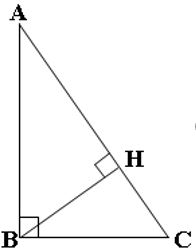

Activité: Relations métriques dans un triangle rectangle
Pour améliorer ses connaissances dans les calculs de distances afin de mieux aider son père, Baké se propose le schéma réalisé ci-dessous puis se demande si les égalités suivantes: AB .BC = AC .BH ; AB2 = AC .AH ; BC2 = AC .CH et BH2 = AH .CH sont fondées.

Consignes
1°) Justifie que AB.BC = AC .BH. (Tu pourras calculer de deux manières différents le sinus de l’angle BAC).
2°) Justifie que AB2 = AC .AH. (Tu pourras calculer de deux manières différents le cosinus de l’angle BAC).
3°) Justifie que BC2 = AC .CH. (Tu pourras calculer de deux manières différents le cosinus de l’angle ABC).
3°) Justifie que BH2 = AH.CH. (Tu pourras calculer la tangente de l’angle BAH et la cotangente de l’angle ABH).
https://www.geogebra.org/m/zdvcwvex
Propriétés: (les relations métriques dans un triangle rectangle)
-Dans un triangle rectangle, le produit des longueurs des côtés de l’angle droit est égal au produit des longueurs de l’hypoténuse et de la hauteur relative à l’hypoténuse.
-Dans un triangle rectangle, la longueur de la hauteur relative à l’hypoténuse est moyenne proportionnelle entre les longueurs des segments qu’elle détermine sur l’hypoténuse.
-Dans un triangle rectangle, le carré de la longueur d’un côté de l’angle droit est égal au produit des longueurs de l’hypoténuse et du projeté orthogonal dudit côté sur l’hypoténuse.